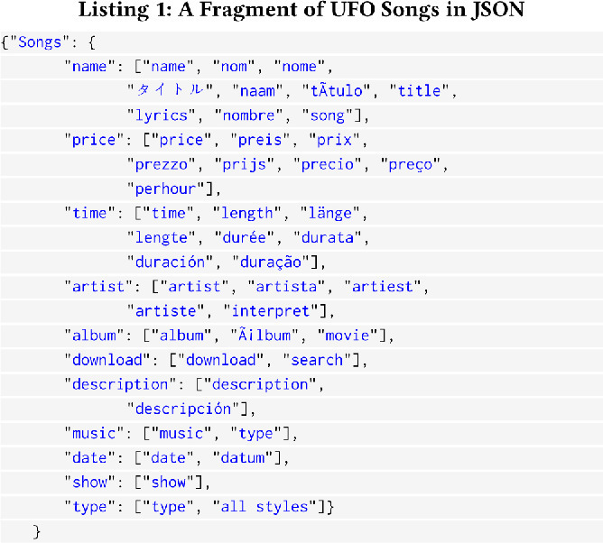

DOI: https://doi.org/10.1145/3184558.3191600
WWW '18: Proceedings of The Web Conference 2018, Lyon, France, April 2018
Variety of Big data [17, 40, 44, 47, 52] is a significant impediment for anyone who wants to search inside a large-scale structured dataset. For example, there are millions of tables available on the Web, but the most relevant search result does not necessarily match the keyword-query exactly due to a variety of ways to represent the same information.
Here we describe Hybrid.AI, a learning search engine for large-scale structured data that uses automatically generated machine learning classifiers and Unified Famous Objects (UFOs) [33] to return the most relevant search results from a large-scale Web tables corpora. We evaluate it over this corpora, collecting 99 queries and their results from users, and observe significant relevance gain.
ACM Reference Format:
Sean Soderman, Anusha Kola, Maksim Podkorytov, Michael Geyer, and Michael Gubanov. 2018. Hybrid.AI: A Learning Search Engine for Large-scale Structured Data. In WWW '18 Companion: The 2018 Web Conference Companion, April 23–27, 2018 (WWW ’18 Companion), Lyon, France. ACM, New York, NY, USA 8 Pages. https://doi.org/10.1145/3184558.3191600
With the advent of large scale data management systems, data scientists and analysts have more information at their disposal than ever before. This influx of data makes retrieval of needed information challenging [6, 39, 47, 56]. Consider a data scientist working with structured data who has a recently mined large scale Web table dataset. If s/he wanted to enrich her information concerning weather in her region, s/he might be inclined to use keyword search in order to find the best records of interest in the dataset. However, a standard keyword-search over structured data, by nature, may provide inaccurate or incomplete search results, even when using sophisticated ranking functions, due to mismatches of relevant information to the query or the presence of relevant terms in irrelevant data rows [5]. Also, most structured data search engines return entire tables instead of the most relevant rows fused from many tables.
Although the properties of human language and text are the root cause of these issues, it is possible to decrease them by analyzing the semantic properties of data. This is what we do in
In order to generate the aforementioned classifiers, we make use of user-specified keywords to search for rows from tables that contain these keywords as attributes. These keywords are meant to be correlated with a certain object, for example, if we wanted to create a classifier for “jobs”, our system would generate training data using keywords such as “salary”, “date”, and “position”. Once this is done, we automatically train the classifier, then use it to cluster table rows that are likely to be job-oriented. Finally, we extract core attributes [33] from this set of classified rows. Informally core attributes are the most important attributes of an object (e.g. wings for a bird) a critical component of UFOs, a data structure used for fusing similar structured data objects that are represented in different ways [27, 41]. We use core attributes as soft constraints, improving the rank of results that are related to a specific object of interest. With this method, we get more relevant results, compared to the standard retrieval and ranking schemes for keyword search over structured data.
Our contributions in this paper are the following:
We are not the first who made an attempt to search Web tables. For example, [10] describes techniques borrowed from Web search to index and search Web tables. Another recent project focused on Web table search was [54], however, their domain was question answering instead of generalized search over structured data.
The rest of the paper is organized as follows. Section 2 discusses related work. Section 3 describes the system architecture and classifier generation. Section 4 describes a search scenario & classification scenario that illustrate our system. UFOs: Unified Famous Objects, are a structure used to abstract away differences in data representation [27, 33, 41]. See Section 5 for a more in-depth discussion on UFOs. To rank tuples from a large-scale corpus of Web tables from [28], we designed and evaluated several ranking functions optimized for large-scale structured data, making use of the best one for our system. Refer to Section 6 for more details on ranking. To evaluate our ranking, we compare it to an enhanced version of a standard ranking function popular in structured data search [5, 10, 13, 54] in Section 7. Future work is described in Section . We conclude in Section 8.
We studied a variety of relevant systems in Web-search, large-scale data management, and information extraction/retrieval. [10] describes different search methods for Web tables. A key technique the authors use for improved search results is through using the
We evaluate our system using nDCG [38] rather than precision and recall, because our system is a search-engine, not a Q&A system. nDCG takes not only precision and recall, but also ordering of the results into account, which is very important for a search-engine.
DBxplorer [5] is a keyword-search engine for relational databases that supports conjunctive keyword queries. It can also join tables, creating rows that contain all keywords from a search query, as well as attributes from different tables in this join result. This contrasts with our approach, which uses a more flexible disjunctive keyword search, fuses, and ranks tuples by relevance from millions of Web tables having different schemas. Disjunctive keyword-search allows retrieval of possibly relevant rows, despite not containing all search terms used. DBxplorer ranks rows by using the number of joins involved in the generation of a row rather than using weights of terms from the query and the tuples or more advanced techniques, outlined in Section 6. The authors’ reasoning behind using the number of joins for ranking is that tables generated from several joins are harder to comprehend ([5], Section 6.2). This is somewhat similar to using keyword-proximity to help with ranking because tables must be joined until all keywords are present, however it does not consider stronger signals for relevance in search results.
[13] developed a ranking system for database queries. Rather than returning all tuples that satisfy a query, it calculates the top-k relevant tuples. To calculate relevance, it uses a global score that depends on user preferences, as well as a conditional score that considers the correlations between specified and unspecified terms in a query. In contrast, our ranking functions are dependent on the terms in the query and the relevance score of a tuple from the Web table.
In [16], a framework for defining the relatedness of tables based on whether or not they can be joined, as well as algorithms for detecting related tables that can be unioned or joined, was created. This was done to enable the retrieval of tables related to an input table, using this input table as a query rather than keywords. The authors defined two definitions for relatedness: entity complement and schema complement.
The former states that two tables T 1 and T 2, derived from a possibly nonexistent table T, must be created with selections over the same set of attributes in T, using different predicates. In addition to this, the combination of the selected tuples in T 1 and T 2 must consist of everything in T. Lastly, any projections from these selections must be on the same sets of attributes, as well as include the subject columns, which define the entity being described in the table.
An example of this would be a table about car models. If table T 1 had the attributes “model”, “make”, and “year”, and the other table T 2 had attributes “name”, “warranty” and “horsepower”, it would be feasible that both of these tables were projected from a table containing all of these attributes, with some attribute expressing “name” or “model” since they are synonymous. To ensure that this measure of table relatedness makes sense, the authors also ensured the coherency of the virtual table. In order to do this, they ensured that the entities within T 1 and T 2 were of the same type, such as “name” and “author” both being identifiers. An example of an incoherent table would be one storing information about baseball cards and theater showtimes. Such a table would have a low coherency score. However, a table storing information about the 2016 and 2017 NBA championships would be deemed sensible.
Concerning schema complement, the two tables T 1 and T 2 would have to be created using queries Q 1 and Q 2 that have a similar structure. These queries must be in the form of a projection, additionally, they must select attributes so that T 1 and T 2 have at least one attribute not in common with one another, as well as at least one in common. Finally, the union of these two sets of project attributes must consist of the attributes in the virtual table T.
We create tables of related content using classifiers, instead of inferring whether tables could be coherently joined or unioned. Due to this, we do not employ such an artificial relatedness measure. We do not focus on ranking related tables, since we rank single tuples at a time in order to form a concise result set from thousands of tables. Also, because of our focus on single tuples, we have no use for inferring whether two results could be formed from similar SQL queries. Their objective of enhancing a user's tables is also different from our vision of unified retrieval of the most relevant tuples from the entire corpus. [12] developed a Web table service built on top of data derived from Microsoft's Bing Web search engine. Their search service uses machine learning to identify the entity column, which contains entities described by the values of other attributes in the table. This is done for queries such as “population of San Antonio” and “population of Bexar county”, since both queries may match the same row even though the table may only describe the population of one of these entities. The authors also use static features such as number of rows and PageRank to aid in ranking tables, in addition to a feature based on the cell placement and column/row frequency of certain keyword matches. It is difficult to determine how effective their web table ranking is, since they do not provide an evaluation on it. We provide a thorough evaluation of our ranking in Section 7 using nDCG, a widely-used metric for assessing search result relevance [38]. Our method uses machine learning to identify rows belonging to objects of the same class, rather than identifying entities. We also rank using a combination of keyword intersection and core attribute matching, not taking into account the position of terms other than for our keyword proximity calculation. Finally, we return a combination of rows from different tables rather than an entire table at a time. This consolidated search result, including rows from many relevant tables, provides more relevant search results, compared to returning just one of a few entire relevant tables that may or may not have all rows relevant to the query.
[27, 32, 33, 41] developed a system that provides a unified, object-oriented way to query data from different data sources. Using UFOs hides structural differences between data sources and offers a query-able abstraction that is oblivious to this difference in metadata from different sources. It can also use the UFOs it has already constructed to identify new, familiar objects [3, 7, 14, 19, 20, 29, 30, 31, 34, 35, 46, 48]. This is different from our system since it is a system for data integration rather than a search engine. [33] describe and evaluate algorithms for UFO [27] creation. The authors illustrate the pre-UFO technique for matching attributes, such as BuyItNowPrice to Buy-It-Now-Price, as well as more dissimilar ones such as ConvertedCurrentPrice to CurrentPrice. This was done using exact matching, tokenized matching, and an NLP-enhanced version of the tokenized matching that uses part-of-speech tagging. The authors define core properties, or core attributes, which are the attributes that must be present for a UFO to exist. See [33] for more details. Our system focuses on generating these sets of core properties using term matching to count their occurrences [41]. We use them to assert the relevance of rows within the dataset, rather than building UFOs for identifying similar objects. [32] applied UFOs [27] to identify and fuse biomedical data, and used it for pre-diagnosing an early-onset Alzheimer's Disease. The authors demonstrated how UFOs simplified comparing a patient's DNA sequence with a reference sequence, resulting in a pre-diagnosis. Our system uses UFO's core attributes to boost search result rankings. Our search system also uses unstructured keyword queries rather than XQuery, translating them into SQL. Another key difference is how we return rows from many tables in a single, consolidated result.
Figure 1 displays an overview of our system's components. A brief description of each one follows.
We use a large-scale Web tables dataset of ≈ 86 million Web table tuples (Approximately 55 million non-spam tuples) from [28, 55]. These instances came from Web tables pulled from sources such as online forums, social media sites, product offers, and others. They consist of data items or attributes from these web tables. We link each tuple to the web table it came from by storing an ID for that table in the tuple. We used [42, 53] to store said dataset.
Similar to E-mail or Web pages, tables extracted from the Web also have spam (examples include empty tables, HTML formatting, junk advertisements, etc) and require cleaning before ingestion. We trained our own J48 web table spam classifier [43, 55] to filter out tables with these characteristics. Using 10-fold cross-validation, a technique for estimating model performance [43] (in this case, the performance of our classifier), we observed 72.6% precision and 70.6% recall.
After cleaning the data, once they are ingested into the parallel column store, we retrieve groups of similar objects using SQL queries. These queries are constructed from a set of keywords provided by the user (see Figure 4), such as “album”, “title”, and “price”, which in this case may have been chosen to generate training data for a classifier to identify song oriented data.
We automatically generate large-scale machine learning classifiers using the training data generated with the queries in the previous step. For example, the cluster of tables sharing attributes “trailer”, “length”, and “director” concerns movies, and after being trained on the data in this cluster, the classifier can identify more rows in the corpus associated with this movie data. Note that it is not necessarily the case that data positively labeled by this classifier will have the same set of attributes as the generated training data. We use 10-fold cross validation [43] to evaluate precision/recall of generated classifiers, observing an average of 92.5% precision and 92.1% recall across nine classes of objects (e.g. songs, job postings, blog postings, real estate postings, etc) [19, 21, 22, 23, 24, 25, 26, 45, 51].
In order to extend our solution to be fully automated it is required that we identify those rows which contain attribute labels. That is, we must identify the descriptive metadata [18] of a table. A set of 900,000 records was processed to create a vector space with 6,900 features. From these rows, the training data was gathered using a series of rules. For example, one such rule was that from within a single html table, at most one row could be considered metadata. Another rule was that rows with low word count were more likely to be metadata. This training data was then manually checked and pruned for accuracy resulting in 6,500 negative samples and 540 positive samples. Using this training data we produced a Support Vector Machine classifier with a linear kernel [15] and a one-vs-one decision function [37] to identify rows containing metadata. This model was selected to help compensate for the small training set compared to the size of our vector space. After performing 10-fold cross validation [43] to evaluate the precision and recall we observed an average of 80% precision and 64% recall.
We designed a machine-learning augmented keyword search scheme using classifiers trained in the previous step to return the most relevant search results. Our ranking function uses the classifiers described in the previous paragraph, intersection, proximity, and UFOs [33] to rank search results. Refer to Sections 6 and 7 for more details on the ranking algorithms and their extensive evaluation.
An interactive user interface is used for executing search queries on our Web tables corpus. It also functions as a tool for training machine learning classifiers, generating & executing SQL queries for fetching training data (see Figure 4).
In Figures 2 and 3 are screenshots of the web frontend to our search engine corresponding to our two search scenarios. In the first scenario, the user searches data with the default mode, that is, an intersection-based, keyword-proximity augmented keyword search over Web table tuples. The second scenario enhances this method using UFO core attributes, which were collected from classified subsets of our large-scale dataset. This is done whenever a user enters a tag, like “:songs”. Rather than filtering all data that does not topically match this tag, we use the attributes of web tables associated with this tag to increase the rank of results sharing those attributes. See Section 6 for more details regarding attribute-driven rank calculation.
After describing how our system carries out search, we illustrate how users can specify keywords, such as “make”, “model”, and “year”, to fetch training data with these attributes (see Figure 4). In order to use our improved ranking function in the search scenarios, we need to first train then use these classifiers to identify all rows that fall under a certain category, such as songs.
Here the user wishes to find articles on scientific discoveries. Using the standard popular ranking functions for structured data gives us vague search results (Figure 2). The main problem with these results is that they contain little useful information, and might actually be pointers to some articles.
With our UFO core-attribute augmented querying scheme in Figure 3, the user specifies a class of objects of interest in the query, here articles, which makes the system perform an attribute-matching algorithm after the initial keyword-based retrieval. This algorithm rewards rows that came from tables that share attributes with article-oriented data (see Section 6 for more details).
The results in Figure 3 are a major improvement over those in Figure 2. It is important to note that we do not only see an improvement in ranking (the results are actual scientific literature as opposed to what seem to be website elements), we also observe the ability of our system to return results with different attributes for the same query. This difference in attributes is apparent from the varied content of the data presented in the results in Figure 3.
Here, we describe how to automatically generate a machine learning classifier, identifying rows of a certain type among millions in the corpus of Web tables. The user enters a few descriptive keywords [28] in the bottom left frame in Figure 4, for example “make”, “model”, “year”. We use these keywords to fetch rows corresponding to the web tables that contain them as attributes. In addition to the attribute names, the user can enter lower and upper bounds on the row-length and column-length. Row length is the number of characters in a tuple of a Web table. The column-length is defined as row-length, but with respect to a column of a Web table. Such parameters are needed since we store all of the Web tables in our corpus within a single database table, and the number of attributes as well as rows varies between tables. The user can also pick checkboxes corresponding to each column to indicate which ones the filters apply to. Our interface allows the user to select up to 7 columns in this way. Refer to [28] for more details on classifier generation.
Once the keywords are in and the filters are selected, the user clicks Generate Training Data to retrieve training data having these attributes. A sample is shown to the user in the right frame of Figure 4. Finally, the user can select the classifier type (e.g. J48, Naive Bayes) by toggling a radio-button. After that, the user clicks the Generate Model button, which triggers the process of training the machine-learning classifiers using these generated training data. The training set contains positively labeled training data, created as described above, and negatively labeled training data, which was made by selecting rows from the corpus without positive labels. We use 50% negative rows and 50% positive to create a balanced training set.
After the model is trained, it is run to classify the Web table rows and output a sample to the user in the right frame of Figure 4. If the user is satisfied with the model performance, s/he clicks the Add to schema button and the model is added to the list of objects in the left frame. After that, the user can click it in the left frame, and the classified data rows will be displayed in the right frame.
UFO is an abstraction introduced in [27] to assist in data fusion of the same object from different data sources. An example of a UFO stored in JSON is illustrated in Listing 1. In this UFO for Songs the “name” attribute has a collection of its different representations accumulated from different data sources, including those in different languages.
With regards to our usage of core attributes, Listing 1 demonstrates a sample of the kinds of attributes we collect and use in the algorithm described in Section 6. Attributes in different languages are still useful for gathering data that is associated with a certain object (here, “songs”). Refer to [27, 32, 33, 41] on UFO definition and more details on automatic UFO construction and data fusion using UFOs.

Here, we formally describe the two ranking methods we evaluate in Section 7 below. With regards to our baseline method, we used a combination of term intersection, which we found to be more effective than a term-frequency based approach, as well as augmented it with keyword proximity. Thus, the effectiveness of this approach makes the challenge of improving it more difficult.
We use a derivative of an intersection-based keyword ranking scheme with proximity as a baseline to compare with. It is one of the most widely-adapted popular search schemes for structured data [5], on the Web [9], and in document search [36].
ti − idi (Term Intersection - Inverse Document Intersection): Our ranking function for large-scale structured
datasets accounts for high redundancy of search keywords in arbitrary database rows, a phenomena we observed for such datasets. This could happen even when the row in question is not spam [55]. An example of this would be a row containing a large amount of information concerning nobility, the word “lady” could appear multiple times. Such a row would expose the weakness of traditional tf − idf ranking in the context of databases when a user issues a query like “lady gaga songs”. In this case, the irrelevant information about nobility would be ranked much higher than information about Lady Gaga's music, simply because the word “lady” appeared many times in the row. Thus, we defined the following ranking function to account for this problem, in addition to incorporating all standard ranking features of keyword search:
As a final measure in this base ranking scheme, we use keyword proximity [8] to discount the rank of rows containing key terms that occur further apart. We take the total distance (starting at 1 when all words are adjacent) between the closest occurring keyword terms in a row and divide the ti − idi score by the natural logarithm of this value. This is since we do not wish to penalize the score of possibly relevant rows too harshly. We discount the ti − idi score by the natural logarithm of 100 if only one keyword is present in the row, as such a result is highly unlikely to be relevant. We came up with this constant experimentally, in order to prevent any rows with only one matched term from appearing if rows with more matched terms exist in the corpus.
In this scheme, we first extract UFO core attributes [33, 41] from each Web tables’ subset labeled by our trained classifier to belong to a certain class (e.g. songs), then use them to retrieve the most relevant search results from the entire corpus. We extract this set of core attributes with a query that fetches attribute rows that belong to the classified data. Each row in our corpus contains a filename, identifying the Web table it came from. We join the set of classified data rows with all metadata rows from the corpus on their filename. We then iterate through this table of attributes, counting the occurrences of all attributes and inserting the attribute frequencies into our table of core attributes. This step is done offline per UFO to reduce overhead during query-time. See [41] for more detail on UFO construction and core attributes. During online query processing, we load the pre-computed set of core attributes into a Java HashMap. We then load a result set of the rows containing at least one term from the query into memory, ranking them according to Equation 1. Finally, we increase the ranking of each tuple in the result set by matching each of its attributes to core attributes, increasing their rank by the natural logarithm of the sum of all matched core attribute frequencies. We perform this logarithmic scaling because of the high frequency of many of the attributes in our dataset. Doing this approximates matching an extra keyword for especially popular attributes, thus making it easier to see how core attributes affect the ranking of rows. An even better ranking could be achieved by using Unified Famous Objects (UFO) not only for core attributes, but also for attribute matching [33]. This will enable us to go beyond simple keyword matching, matching words that are either synonymous or closely related to one another to improve a row's rank. See [33] for details on UFOs and object recognition evaluation for UFOs.
It is important to assess the effectiveness of using our Classifiers+UFOs ranking scheme for structured data. To gauge relevance gain over 99 different queries we collected from users, we compare it with the baseline ranking described above in the ”Baseline Ranking” paragraph in Section 6.
To evaluate relevance gain provided by our ranking function, we asked 28 students taking a database class to come up with a few queries they might be interested in executing over our Web tables dataset. After accumulating 99 different queries, we asked two independent evaluators to assign relevance labels from 1-Bad to 5-Perfect to all (query, search result) pairs generated by our two ranking schemes for these queries. We took 15 top results for each query. We dropped a label whenever the evaluators disagreed. Based on these labels and ranking by our schemes, we took the top 15 results from each query to compute their nDCG 15, which is an industrial standard measure to evaluate search relevance [4]. It stands for “Normalized Discounted Cumulative Gain” and reflects relevance of search results to the specific query. It computes a value based on user-assigned relevance labels to rows in a result set, discounting their contribution to the overall DCG score the lower their position is in the result set. The following equation formalizes this intuition:
In Figure 5, each point is the delta between the nDCG 15 value of the same query run using two different query processing schemes. The first is with UFO core attributes and classifiers, the second is the baseline ranking scheme. Many queries get better as we can see from the graph, at the same time there are queries that got worse. For example, the largest relevance decrease we observed was for the query “fifth element”, where several of the most relevant results did not have proper metadata attributes in our dataset. This, combined with terms from iTunes being present in the set of film core attributes, caused the query to fetch more song data for this query instead of film data. More queries improve overall, which is reflected by an average 1.5% increase in nDCG over all 99 queries, which is considered significant in web search [4].
We described
We would like to thank anonymous reviewers for their feedback on earlier drafts of this paper. This material is based upon work supported by the National Science Foundation (NSF) under Grant No. 1701081.
This paper is published under the Creative Commons Attribution 4.0 International (CC-BY 4.0) license. Authors reserve their rights to disseminate the work on their personal and corporate Web sites with the appropriate attribution.
WWW '18, April 23-27, 2018, Lyon, France
© 2018; IW3C2 (International World Wide Web Conference Committee), published under Creative Commons CC-BY 4.0 License. ACM ISBN 978-1-4503-5640-4/18/04.
DOI: https://doi.org/10.1145/3184558.3191600